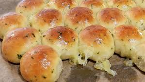

Garlic Cheese Bread

Pull Apart Cheese Bread
This delicious appetizer or snack is great for sharing
Ingredients
Cheese Bread
- 160ml Milk
- 4g Yeast
- 30g Sugar
- 200g Bread Flour
- 4g Salt
- 25g Unsalted Butter
- 160g Shredded Mozzarella Cheese (for filling)
- Milk for basting
Garlic Sauce
- 20g Unsalted Butter
- 7g Minced Garlic
- 7.5g Sugar
- 4g Salt
Instructions
- Preheat Oven to 350°F
- Combine cheese bread ingredients until no flour is visible
- Ferment in a warm place until doubled in size (about 1 hour)
- Divide dough into 16 pieces (~25g each)
- Roll into balls
- Place in a warm location for about 30 minutes to proof
- Roll out dough balls and stuff with cheese
- Baste with Milk
- Bake for 12 minutes
- Mix together garlic sauce ingredients
- Remove from oven and baste with garlic sauce
- Bake for an additional 10 minutes